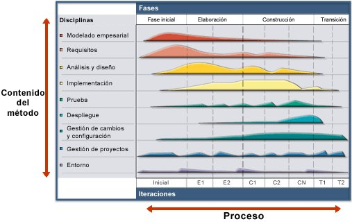
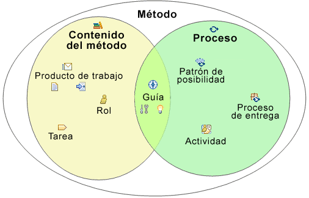

| Principios básicos de la arquitectura de método |
 |
|
| Contenido |
|---|
¿Qué es UMA?La arquitectura unificada de método (Unified Method Architecture, UMA) es metamodelo de ingeniería de procesos que define los esquemas y la terminología para la representación de métodos que constan de procesos y contenido de métodos. Consulte el tema Concepto: Principales posibilidades de la arquitectura unificada de método (UMA) para obtener más detalles. Principios fundamentales de UMAUMA se basa en las siguientes separaciones de principios fundamentales:
Elementos básicos de UMAEl principio más básico de la arquitectura unificada de método (UMA) es la separación del contenido del método central reutilizable de su aplicación en procesos y casi todos los elementos de UMA se categorizan a partir de esta separación. La arquitectura unificada de método separa el contenido del método central reutilizable de su aplicación en procesos. En el contenido del método se describe lo que se produce, las habilidades necesarias y la explicación detallada de cómo se alcanzan los objetivos específicos de desarrollo, con independencia del lugar que ocupen estos elementos en el ciclo vital de desarrollo. Los procesos toman estos elementos de método y los relacionan con secuencias semiordenadas que se personalizan con tipos de proyectos específicos. Por ejemplo, un proyecto de desarrollo de software que desarrolle una aplicación desde el principio lleva a cabo tareas de desarrollo como el "desarrollo de la visión" o el "diseño de ejemplos de uso" similares a un proyecto que amplía un sistema de software existente. No obstante, los dos proyectos realizarán las tareas en momentos distintos y con distintos niveles de énfasis, es decir, en momentos diferentes y con posibles variaciones y adiciones específicas. La figura que se muestra a continuación muestra la diferencia entre el proceso y el contenido de método al representarlos como dos dimensiones distintas:

Definición del contenido del método contra Los conceptos fundamentales de UMA reflejan esta separación de contenido del método con respecto al proceso, como se indica en la figura siguiente. En ella se aprecia que un método (también denominado una infraestructura de método) comprende el contenido del método descrito mediante conceptos como productos de trabajo, roles, tareas y categorías, así como los procesos descritos mediante actividades, patrones de posibilidad o procesos de entrega.  Visión general de cómo los conceptos fundamentales de UMA se posicionan considerando si representan el contenido del método o del proceso. Los elementos del contenido del método fundamentales son: Los elementos de proceso fundamentales son: La Guía tiene muchos tipos: |
© Copyright IBM Corp. 1987, 2005 Reservados todos los derechos |